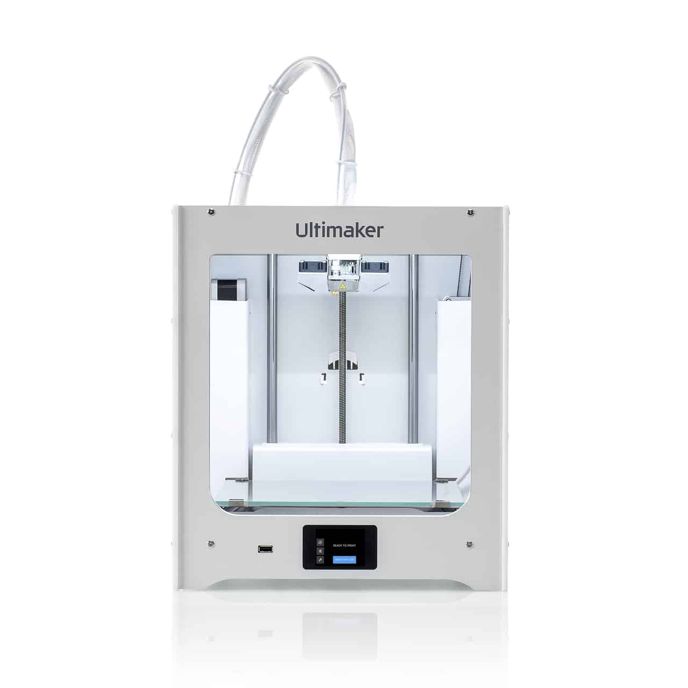

Introduction
Every Scholar either in the undergraduate program or in the research program has trouble with some of the basic components in daily use.
The most irritating component is the transistor because it is difficult to identify its types: NPN, PNP, N-Channel, P-Channel, E-MOSFET, or D-MOSFET, and its pins (EBC).
The parameters that irritate the most are the current gain value or IDSS, which can significantly impact calculations.
This device will include a user-interface system that provides the current gain or IDSS value, as well as the collector cut-off current (ICE0)
and collector residual current (ICEs) simultaneously.
Design Requirements:
To proceed with this objective, we will be provided with the essential components, and other parts will be printed using the
Ultimaker 3D printing machine in the Fabrication Lab and Workshop Lab.
Following components are considered for design requirements:
- LCD Display with 16 by 2 Character (for displaying results)
- Jumper Wires (for connections of components)
- USB (MINI) DC Power Supply
- 6 Resistors (3 × 680 ohm & 3 × 470 KΩ) (Measurement type resistors)
- Testport (To measure components)
- Self Created Dedicated Printed Circuit Board
- Test Button
- Some Parts to be Printed from Ultimaker
High Level Design
Sample Images of Final Design:
The following picture of the product has been focused upon as a reference design:
From this design, an idea will be taken and a similar product will be designed.
The following picture of the internal circuit diagram has been used as a reference to be updated:
From this circuit diagram, we have been instructed to convert the whole scenario from OLED-based, which has proved to be a grave challenge.
In other words, we have been guided to create our own dedicated PCB circuit which should run all the components with the given microcontroller.
Mechanical Drawing:
The following picture is the roughly drawn mechanical design of the product:
Different dimensions (in millimetres) have been assigned to the parts, keeping in mind the size of the PCB and other components.

Project Execution Plan:
All the electrical and mechanical components will be tested and learnt to control one by one, and then collectively be controlled to get the genuine idea and understanding. In this manner, the provided referenced circuit will be implemented.
Distribution of Tasks:
| S.No | Tasks | Pictures | Distributed to |
|---|---|---|---|
| 1 | Literature Review of the project and functional requirements. |  |
Both |
| 2 | Selection of components. |  |
Both |
| 3 | To Design of Schematic / PCB. |  |
Wakeel Ahmed (033-19-0026) |
| 4 | To design in CAD. |  |
Bhai Khan (033-19-0015) |
| 5 | To work on PCB Designing. |  |
Team of FAB Lab |
| 6 | To solder components on PCB. |  |
Both |
| 7 | Printing the PCB. |  |
Team of FAB Lab |
| 8 | Printing all 3D parts. |  | Team of FAB Lab |
| 9 | To assemble everything together. |  |
Both |
| 10 | To make report. |  |
Both |
Execution of General Tasks and Main Tasks by Using Arduino UNO:
-
Task No.1
Bread Board Prototype
With general code.


Design
High Level System Diagram:
The following circuit diagram has been created in Fritzing application software.
This became our finalized circuit design after receiving suitable components and working hard on coding for having one micro-controller.
Description of Principle of Operation
In this circuit, 5V DC power supply has been connected through USB(MINI) is connected to the circuit and then we insert a component in testport. One testport pin is selected as the positive side of the device and connected directly to VCC. The other testport pin is selected as the negative side of the device. The negative side is connected with the 680 resistor to GND. With field-effect transistors, the state of the device depends on the voltage of the gate. The Tristate pin is first connected with the 680 resistor for 5 ms to the GND side and the voltage at the negative side is measured. After that, the voltage of the negative side is measured again during the Tristate pin switched as input (High Impedance). Then the assumed gate is connected with the 680 resistor for 5 ms to the VCC side and the voltage on the negative side is measured again. If the measured voltage is lower than the first measurement result, this circuit will be assumed as the right one. Then the voltage is measured again with currentless Tristate pin.
When the Arduino code is uploaded in the Arduino UNO, LCD Display will be turned on, by inserting the component and by pressing the test button. The Testor then will start their calculations through resistors and display the results on the screen.
| Component Name | Picture | Description |
| Microcontroller 328P |  |
It is an advanced virtual RISC microcontroller. It supports 8-bit data processing and has 32 Kb internal flash memory. It has 1Kb EEPROM also. It means that it can store data even if the electric connection is disrupted. It works on advanced RISC architecture, good performance and low power consumption. It has 3 built-in timers, of which two are 8-bit timers and the third one is a 16-bit timer. It’s operating voltages are from 1.8V to 5.5V. |
| LCD (32 character) | This component adds a readable interface to our project. LCD is short for liquid crystal display and basically a display unit uses liquid crystals to form a visual image. When current is applied to these crystals, they become opaque, blocking the backlight that resides behind the screen. As a result that particular area will be dark compared to the others. And this is how the characters are displayed on the screen. If you look closely, you can see tiny rectangles for each character on the display and the pixels that make up a character. Each of these rectangles is a grid of 5×8 pixels. | |
| USB (MINI) |  |
It is a small USB socket found on digital cameras, external hard drives, USB hubs and other equipment. Mini USB is much smaller than USB Type A and B but twice as thick as Micro USB. Mini USB and all other USB connectors are expected to be superseded by USB Type. Here in the project, we are using the Mini USB in order to power the device. It is also used for communication between devices. It has high speed transfer rate of 480 Mbps with on-the-go feature. |
| Tactile Button | In our project, its action is similar as described in its characteristics. When we press the button after inserting the component in our project, it gives the message like “ArduTester testing” — meaning it indicates the flow of current in that particular moment. After a few seconds, our project will show answers. If we plug out the component and insert another one, then we again press the button for testing of the device. | |
| ICSP Header | The primary advantage of in-system programming is that it allows manufacturers of electronic devices to integrate programming and testing into a single production phase and save money, rather than requiring a separate programming stage prior to assembling the system. Another advantage is that production can always use the latest firmware, and new features, as well as bug fixes, can be implemented without delay. With these pins, we can also connect other devices for our project. It also functions for connected devices to the microcontroller as master-slave. | |
| FTDI (Future Technology Devices International Limited) | They are used to interface devices like Arduino with the laptop through a USB cable. In simple words, an FTDI chip makes it super easy to convert a USB signal to the UART signal understood by the microcontrollers. We use FTDI connectors to program the microcontroller in our project. We programmed the microcontroller by connecting the FTDI cable to our computer and then burned the program to the microcontroller with the help of Arduino IDE. | |
Connectivity of Components by Protocols:
Two main protocols have been used in the circuitry of this project.
- UART Protocol
- SPI Protocol
-
UART Protocol:
UART stands for Universal Asynchronous Reception Transmission. This protocol permits the Arduino to communicate with serial devices through the pins D0 (Rx) & D1 (Tx).
They are used to interface devices like Arduino with the laptop through a USB cable. In simple words, an FTDI chip makes it super easy to convert a USB signal to the UART signal understood by the microcontrollers.
There is no trace of communication protocol (most popular I2C or SPI) found within the components in our project. However, when our device is
connected to other devices like a computer for the purpose of bootloading the microcontroller or programming our device, it uses the SPI communication
protocol. This is because we have integrated ICSP headers into the PCB.
SPI is a protocol that transfers data serially between two microcontrollers and other devices. It is a synchronous interface, meaning it uses a clock
signal to transfer and receive data. In our project, the clock functionality is handled by a crystal oscillator.
This interface uses MISO, MOSI, SCLK, CS, RST, and GND for communication. We bootloaded the microprocessor
using ICSP headers, which relied on the SPI protocol.
Electrical Schematic
Description
From the beginning of this project, our circuitry is based on Arduino. Hence, the schematic has been created similar to that of Arduino
in which ATMEGA328P microcontroller of SMD package has been used along with LEDs, capacitors, measurement-purpose resistors, and a crystal oscillator.
In addition to these, male connectors have been attached for our components and for uploading the code using the FTDI Cable and for Bootload.
We also used a USB port for power supply, testing ports for component placement, and a test button. For visual output, we used a 16x2 character LCD
to display the tested component parameters and its schematic symbol.
PCB Layout

Challenges
Firstly, we both tried but found that we were totally unfamiliar with Eagle software. The FABLAB team introduced us to its basics.
When switching from schematic to board layout, we struggled with component placement due to limited knowledge and inexperience.
Again, the FABLAB team helped guide us through it.
Secondly, we initially tried to keep the circuit on a single layer. But due to complexity, we switched to a double-layer layout
to ease routing and create a compact design.
Third, when transitioning to a double-layer PCB, we faced issues such as shifting traces between Top and Bottom layers,
adjusting drill sizes, and managing the spacing between adjacent traces and vias. The FABLAB team continuously guided us while
we worked under the supervision of Dr. Asim Samejo.
Bill of Material

Clean Printed Circuit Board


First Layer Second Layer
Populated Printed Circuit Board

Populated Printed Circuit Board
Burning the Bootloader

Procedure of Burning Bootloader
Bootloader is an initial piece of code (usually 512 bytes) which runs whenever a microcontroller is powered up or resets.
It also looks for external inputs, i.e. uploading a new program.
Similarly, in case of no input, it executes the program that was uploaded previously.
Bootloading a device requires the following basic components:
- Arduino IDE
- Device (to be bootloaded)
- USB-AVR-ISP (option in IDE and is optional)
We adopted the following procedure to bootload our project in coordination with Sir Nadir Ali.
- Open the bootloader firmware from Arduino IDE by following the path: File → Examples → ArduinoISP.
- Select the model of programming board by following the path: Tools → Board → Arduino Uno.
- Select the Upload button in the IDE and proceed to load the ArduinoISP sketch to your programmer board.
Challenges in Booting Up
We faced an issue during bootloading our project. In order to bootload the circuit, two steps were necessary:
The first step was to check the program we were using to bootload — fortunately, this was not the issue as the program came directly from the Arduino IDE.
The second step was to analyze the hardware circuit. Bootloading problems are usually due to either the program or the circuit. Since the program was verified,
we investigated the circuit. After deep analysis and tests, we realized that the crystal oscillator was not soldered properly.
Once we re-soldered the oscillator correctly, we were able to bootload our circuit successfully — as documented in our reference image.
Successfully Operating Circuit

Video
Demonstration of Operational the Circuit
In our project, besides the microcontroller requirements, four other main components are added to the PCB:
The USB (Mini) is used to power the circuit with approximately 5V. A test button is pressed when the device under test (component)
is placed in the test port, or after a test is done, to test the next component.
Six measurement-purpose resistors are added (three 680 ohm and three 470 kilo ohm). A 16x2 character LCD is used to display results.
In this way, we created a fully operational circuit running on only 5V.
Flow Code of the Software Design

Description of Flow Code
First measurement is done with a 680 Ω base resistor switched to VCC. If the voltage at the base resistor is too low, the 470 kΩ resistor is
taken instead. If the voltage of the collector sinks below 1.6 V when the 680 Ω base resistor is connected to VCC, it must be an NPN,
N-Channel MOSFET, or Thermistor/Triac.
With two simple tests, a Thyristor or Triac can be identified. If the gate pin resistor is connected for 10 ms to GND and then made currentless,
the current at the anode should stay. If the anode resistor is then short connected to GND and reconnected to VCC, the Thyristor should not trigger
again (no current).
Please keep in mind that only low-power Thyristors can be tested, because the holding current of the tester can reach only 6 mA. If both tests
confirm a Thyristor, further tests with reverse polarity are done to exclude or confirm a Triac.
Diagram outlining main Functions
- It operates with the modes i.e., menu selection mode and self-test mode.
- Automatic detection of NPN, PNP bipolar transistors, N and P channel MOSFETs, JFETs, diodes, N and P IGBTs, Thyristors, and Triac.
- It can automatically detect pin layout of the detected part.
- Also measures the current gain factor and base-emitter voltage (VBE) of a transistor.
- Measures the gate threshold voltage, gate capacity value, and RDS(on) of MOSFETs.
- Resistors can be measured with up to 0.01-ohm resolution, up to 50 MΩ.
- Capacitors can be measured between 20 pF to 100 mF.
- Can detect and measure diodes — LEDs are detected as diodes.
- Zener diodes can be detected with a breakdown voltage of less than 4.5V.
Diagram outlining main Functions
| Parts to be 3D Printed | ||||
|---|---|---|---|---|
| Upper Part |  |
Taken from website | ||
| Lower Part |  |
Taken from website | ||
| Rod |  |
Taken from website | ||
Assembly of all Parts


Design Consideration
The idea of the design has been taken from the reference website, and the dimensions have been set in millimetres. According to the height and length of the PCB with mounted LCD, the dimensions have been decided, and upper and lower parts have been built. Inside the enclosure, there will be the dedicated PCB to connect the power supply internally. We created a hole for a USB MINI.
Fabrication, Design and 3D Printing
3D Printing in the Ultimaker

Procedure
The STL file is opened in the Cura slicing 3D printing application, where the part is viewed and set according to
the slicing pattern. The estimated print time can also be previewed.
Then, a GCode file is generated, which is copied to an SD Card and inserted into the Ultimaker.
The printer interprets the GCode and prints the part by slicing hot plastic material layer-by-layer in the required pattern.


Final Design


Cost of the Project
| Component | Cost |
|---|---|
| Full PCB | Rs. 1,500 |
| LCD Display | Rs. 488 |
| Plasting of 3D Printing | Rs. 2,500 |
| Steel Rod | Rs. 600 |
| Total: | Rs. 5,088 |
Business Model of the Project
Nowadays, every product, especially highly proficient and technological, is in high demand. Our mission is to create an affordable, portable, and pocket-sized transistor tester that can be used in electronic labs to measure precise and accurate component values and characteristics.
This tester is designed to be easier to use and more cost-effective than a digital multimeter. It also shows the schematic symbol, pin diagram in case of BJTs, FETs, and MOSFETs, and polarity in the case of diodes and capacitors.
Reference
Click here to visit the project reference website.Source Code
Click here to view or download the Arduino source code.CAD Files
Click here to download the CAD STL file.Fritzing
Click here to download the Fritzing file.Conclusion
In this course, we felt fortunate to learn many new things through self-learning. It must be said that this course proved to be different from the rest. We were free to apply our ideas and engage in challenging activities.
While working on this project, we learned about teamwork, coordination, and cooperation. Our technical concepts were reinforced and enhanced, and learning was continuous.
To sum up, this course was rich with practical experience and hands-on knowledge. We encourage all to take this opportunity with enthusiasm and dedication.